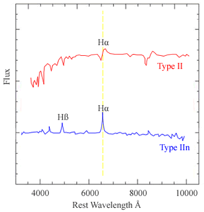
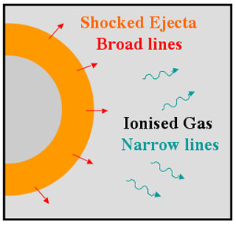

| The presence of hydrogen lines in the spectra of Type II supernovae (SNII) characterises this class of object. These lines have P Cygni profiles and are usually very broad, indicating rapid expansion velocities for the material in the supernova. By 1990, however, there were several examples of SNII that remained bright for much longer than normal, and whose hydrogen lines appeared different. The lines had a vague or no PCygni profile, and instead displayed a narrow component superimposed on a much broader base. These were tentatively labelled Type IIN (SNIIn; the n stands for narrow lines) and although it is not clear whether these objects all originate in the same manner, the subclass currently still persists. |

A SNII spectrum compared with a SNIIn spectrum. The hydrogen lines in the SNII spectrum have prominent PCygni profiles, while the dominant hydrogen line in the SNIIn shows a completely different structure.
|

It is generally accepted that we observe a SNIIn when supernovae interact with dense material surrounding the star. The light we see is not from the supernova itself, but rather from this interaction. The narrow component of the spectral lines is produced by circumstellar gas, ionised as the shock breaks out of the star by the accompanying UV flash. The intermediate and broad components are produced by shocked, high-velocity supernova ejecta, the result of the collision of the ejecta with the circumstellar gas.
In 2002 a supernova was discovered that caused astronomers to question once more the validity of SNIIn as a subclass of SNII. At early times, the spectrum of SN 2002ic showed that is was clearly a Type Ia supernova (SNIa) in every respect but one – it showed a weak Hα emission. The detection of Hα emission in SNIa spectra is expected as a natural consequence of the currently favoured single degenerate model for these objects. In this model the progenitor is a white dwarf accreting matter from a massive companion (a scenario which would likely involve hydrogen), but the search for Hα in the spectra of SNIa had been a long and unsuccessful venture up until this discovery.
SN 2002ic was classified as a SNIa, but over the following weeks and much to the surprise of astronomers, the spectrum of SN 2002ic evolved into that of a SNIIn! In other words, if we had not observed SN 2002ic at early times, we would have classified it as a SNIIn, not a SNIa. Clearly this implies that SNIIn are not necessarily SNII at all, and that at least some fraction may result from the interaction of SNIa with their surroundings.
There are two other well-studied SNIIn which show almost identical spectral and photometric evolution at late times as did SN 2002ic, indicating that perhaps these too were SNIa. Other well-studied SNIIn, however, show different characteristics, and it could be that these objects are associated with core-collapse supernovae.
If SNIIn do arise from both SNIa and core-collapse supernovae, this would explain why only some SNIIn are radio emitters while others are not. SNIa do not exhibit radio emission and we would therefore expect those SNIIn originating as SNIa explosions to similarly show no radio emission. On the other hand, core-collapse supernovae do emit at radio wavelengths and so we would expect SNIIn associated with these supernovae to also show this emission.
Although the validity of the SNIIn subclass is on shaky ground, many more observations are needed before astronomers can decide once and for all whether these objects should have their own classification.